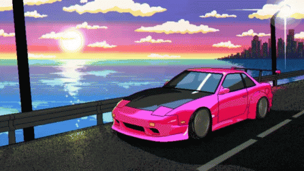

What's got me excited?
For Christmas and New Years, I will be going to New Your City with my girlfriend. She surprised me with tickets a few weeks ago and I've been quietly excited about it ever since. It isn't often I get to travel like this, and I've never been to New York City so my expectations are high!
Why does that excite me?

Why am I excited for this? Why wouldn't I be? We're staying at her Uncles's place to watch the dogs while they're away, but it works out perfectly because we are only a 1-hour drive away from seeing my distant family, whom I haven't seen in 17 years. On the other hand, there's a lot of things to do in New Your City, some of which I've linked in the sidebar. This is definitely a trip to be excited about!
Why should you want to go?

If you're a homebody like me, chances are you're asking yourself "Why would I want to go to New York City? Well, home-bodied people can enjoy luxury lodging at places like The Intercontinental New York Barclay, The Pearl Hotel, or Hotel Indigo that offer high-speed internet, room service, pool & spa services, and an in-house restaraunt. If you're a city-goer who likes to explore the city or enjoy the night life, there's plenty for you to do in the city including escape rooms, arcades, bars, even sailing and helicopter rides! There's something for everyone! Book your vacation and have some fun doing whatever you love during your trip to New York City!